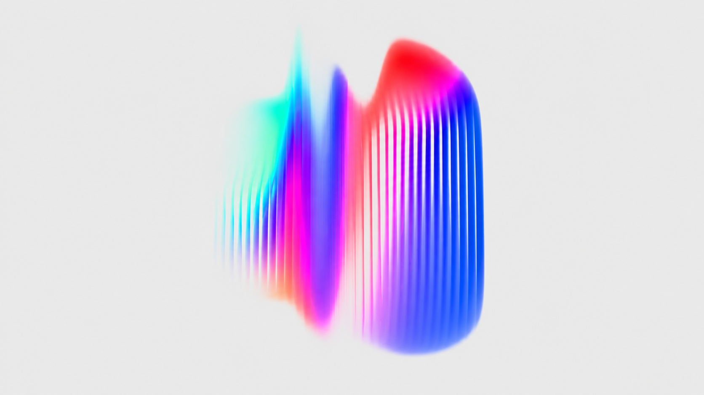

01
用户理解能力.
能够从用户需求、场景和内容反馈中提炼问题，判断用户真正关注什么，并转化为选题、活动和运营动作。
用户洞察需求拆解场景判断

运营与内容策划 / USER · CONTENT · PROJECT
一名关注用户、内容与项目落地的工商管理学生。
目前就读于天津理工大学工商管理专业。过去三年，我持续参与校园新媒体运营、活动策划、品牌创意项目与影像内容制作，逐渐形成了从用户洞察、内容策划、项目执行到数据复盘的完整实践意识。
围绕用户、内容、执行与复盘形成的运营能力。
能够从用户需求、场景和内容反馈中提炼问题，判断用户真正关注什么，并转化为选题、活动和运营动作。
具备图文、短视频、PPT与视觉物料的综合策划经验，能够完成从选题、脚本、拍摄到最终呈现的内容生产。
习惯围绕目标拆解任务，推进时间节点、内容产出和现场执行，保证方案从想法进入真实场景。
具备基础数据分析意识，能够通过播放量、互动量、转化率和流程效率判断效果，并根据反馈持续优化。
持续探索 AI 工具、Codex 与内容生产流程，能够用工具辅助完成资料整理、文案优化、视觉生成和项目搭建。
更贴近运营、内容策划与品牌传播方向的代表性实践。
这部分选择了最能代表我求职方向的三个项目：品牌策划、短视频广告与校园新媒体运营。它们共同指向我对用户洞察、内容表达、项目执行和传播复盘的理解。
品牌策划 / 活动创意 / 内容传播
围绕“慢慢发光，不必赶场”的核心概念，提出线下快闪体验与社交传播结合的整合营销方案，尝试用场景化体验降低护肤焦虑，建立年轻消费者对品牌的长期心智。
短视频策划 / 分镜脚本 / 品牌植入
以“办公室 DDL 压力场景”为切入点，将 MBTI 人格设定与茶酒产品体验结合，完成一支 60 秒短视频广告的分镜策划，通过角色对话、产品特写与场景转折突出“茶酒融合，释放真我”的传播表达。
账号运营 / 内容策划 / 活动传播
参与学院新媒体内容运营与活动传播，从选题策划、拍摄记录、推文制作到视频号内容发布，积累了校园场景下的内容生产、视觉表达和传播复盘经验。
从商业策划、创意比赛到 AI 实验与影像记录，持续拓展内容表达和项目执行能力。
这一部分收录了我的跨领域项目实践，包括大创项目、品牌营销策划、AI 视频实验和摄影作品。它们不作为求职主线，但共同补充了我的商业分析、创意表达、工具应用与视觉生产能力。
大创项目 / 文旅策划 / 商业计划
以河北永清地方戏曲文化资源为核心，围绕“文化赋能下的协同产业发展与乡村振兴”展开项目策划，尝试将地方文化资源转化为可持续的文旅与产业发展方案。
大广赛 / 品牌传播 / 创意策划
以“华尔兹”作为创意隐喻，将产品体验卖点转化为浪漫化的品牌表达。方案包含市场分析、消费者洞察、营销策划、创意设计与媒介排期。
AI 视频 / Prompt 设计 / 内容创意
围绕综艺预告片场景，使用 AI 工具进行世界观设定、镜头提示词设计、画面生成与剪辑整合，探索 AI 在短视频创意、视觉预演和内容生产流程中的辅助价值。
摄影作品 / 活动记录 / 人物拍摄
整理校园活动、毕业照、人像与日常纪实等影像作品，展示从拍摄策划、现场调度到后期处理的视觉表达能力，为内容运营与活动传播提供素材生产能力。